California Heritage Trout Challenge
California is my home state and the place where I first learned to rod-and-reel fish. I made semi-annual camping trips with my family into the Sierra, and sometimes caught fish, which we almost always kept and ate. Some of my best fishing memories are in Kennedy Meadows of the Southern Sierra, fishing the South Fork of the Kern. I also had family in the Kernville area, and fished the mainstem Kern a number of times growing up, though I can’t remember having much success on that river, aside from when the planting truck would pull up and dump fish into the river.
Because California has high state capacity and a professionalized legislature, the California Department of Fish and Wildlife has published a very fancy, glossy brochure that discusses each fish and where to find them. The brochure somewhat confusingly lists twelve total “heritage” trout that exist or existed in California, though anglers only have to catch six to complete the challenge. One of those fish, bull trout, has been extirpated from the state. That leaves eleven.
A second fish, the Paiute Trout, has a native range comprised of a small set of creeks that are closed to fishing because the fish is listed under the Endangered Species Act. While anglers can and do catch the fish in other drainages to which they’ve been transported (apparently in the White Mountains), these fish do not qualify for the Heritage Trout Challenge because they are outside their native drainage. The Heritage Trout Challenge brochure teases that it is possible to catch a Paiute below the closure as fish may wash downstream. I’ve done some research and seen others hint at this possibility, but I don’t know if it’s realistic or not. Assuming it’s not currently possible to catch a Pauite, that seemingly leaves ten total fish.
Even more confusingly, the brochure lists a second recognition level, that of “Master Angler”, if one catches all eleven species, but that includes the Paiute cutthroat. My impression is that the brochure was published prior to the closure of the Silver Creek drainage, home of the Pauite, so I’m not sure it’s possible to complete the Master Angler level. References to the Master Angler level seem to have been completely scrubbed from any current online sources.
Plan of Attack
In the Winter of 2023, I sketched out a backpacking trip into the Sierra for the three Golden Trout species, then I’d add on two additional fish (I’d already caught one, the Lahontan Cutthroat, in 2022). A huge snow year prevented that from happening when I had time for a vaction, in the second week of July. Instead, I completed my California Heritage Trout Challenge (HTC) in the summer of 2023 after catching the remaining five on a long road trip in July of 2023. Even though I previously caught Coastal Rainbows, Kern River Rainbows, and Golden Trout as a child, I treated the challenge as a fresh start.
I’d like to catch the four additional fish to work toward the Master Angler title. If I catch the three Golden Trout, along with the Eagle Lake Rainbow, which I also haven’t managed to catch (and I can’t blame the snow for my failure) I’ll look into whether it’s even possible to catch a Pauite downstream of the closure. In other words, I’d like to complete the Master Angler level, but I’ll save solving the problem of the Pauite for later.
Below, I describe each of the fish I caught, starting with the Lahontan in 2022, then discussing five additional fish caught in 2023. I also want to mention that the website Keep Calm and Fly Fish was an invaluable resource for my trip.
Lahontan Cutthroat–Upper Truckee River
The Upper Truckee headwaters are in Meiss Meadows just over a pass from Highway 88 outside of Tahoe. It was a strange experience returning here as I did a backpacking trip to this same area with my father as a teenager in 1998. On that trip, we tried to reach Showers Lake by hiking south from Highway 50. It was a big snow year and we quickly realized we couldn’t make it, so we drove to 88 and tried to hike north. We were again blocked by snow, and decided to backtrack to Meiss Lake and camp there. It was genuinely shocking to see how much smaller the lake was in 2022 as compared to 1998.
Meiss Meadow is a lovely area that’s an easy day hike from Highway 88. Once over the pass and down into the meadows, the trail crosses the headwaters of the Truckee, but the river here is a little indistinct as it braids through the grass and picks up water from Meiss Lake and a number of small ponds. I hiked past the river crossing, then ventured off trail to a point where I thought the river would be more defined and larger. It was still fairly small and somewhat brushy, but there were lots of holes to cast into, and I could immediately see a lot of fish.
 The old Meiss Ranch.
The old Meiss Ranch.
It didn’t take long to catch a few Lahontans on a generic parachute mayfly imitation, and my first qualifying fish for the California Heritage Trout Challenge was in the books. It was disconcerting to see how low the water was, especially because it was only mid-July, not that late in the season. It was also disconcerting to see damage from the Caldor Fire at various points along Highway 88 up the canyon coming from the west. I’m glad the significant rain and snowfall in the 2022-2023 season will solve some of the water problems in the Sierra, at least temporarily.
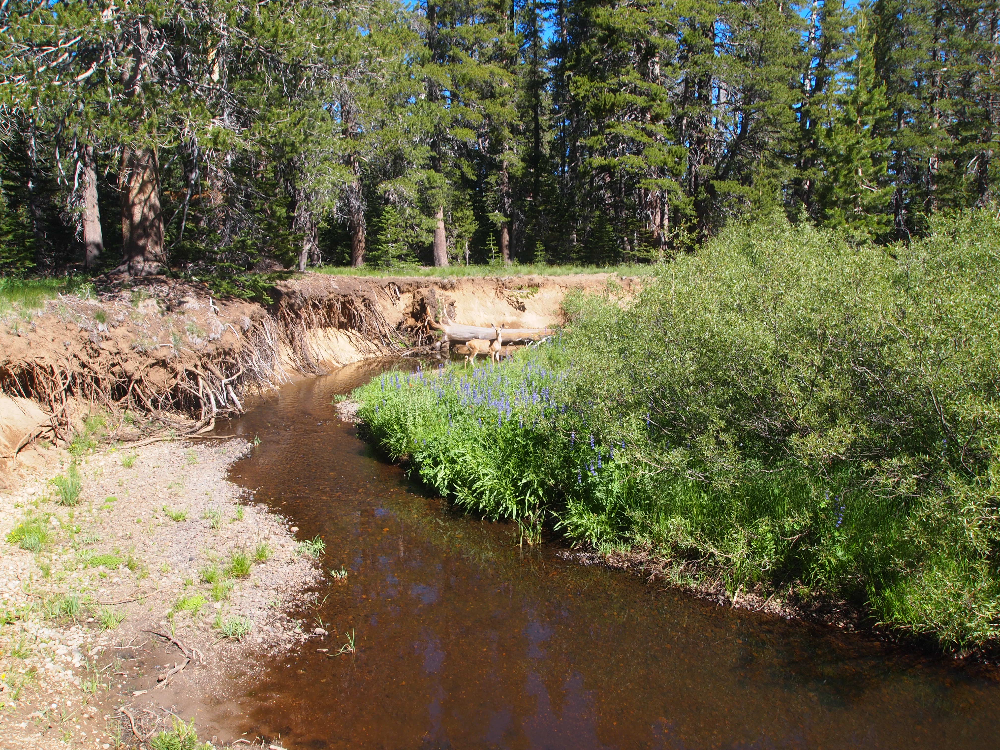 Very low water on the Upper Truckee in mid-July, 2022. Caught a deer unawares.
Eagle Lake Rainbow Trout–Attempt Number 1, Eagle Lake
Have I mentioned how much I hate fishing giant lakes? I went to Eagle Lake about six weeks after not catching anything at Pyramid Lake, and caught…exactly nothing at Eagle Lake. Without a boat, it felt impossible, and in fact, I did not see single person catch a fish from shore. I asked my campground neighbor, an Eagle Lake regular, what I was doing wrong. He said it was the first time he could remember getting skunked. The fish didn’t cooperate, the weather didn’t cooperate, and my bad fishing luck has now extended to a third straight trip. After Eagle lake, I needed a win, and soon.
I fished Eagle Lake on the opener, Memorial Day weekend. I was worried this would make the lake and campgrounds a crowded mess, but it was surprisingly calm. On Saturday, there were probably about 20-30 boats on the lake, but it’s big enough that the scene didn’t feel chaotic. We stayed at Aspen Grove campground which is tents-only, with sites spread out among pine trees. The sites are just about far enough apart to offer some privacy, and the farther one walks back from the parking lot, the nicer the spots, along with less trafficked bathrooms. Most surprisingly, the campground did not fill up on Memorial Day weekend, though it looked like the RV campground was crowded, if not full. There are a few additional campgrounds as one drives around the lake, clockwise. The two BLM campgrounds in the north-west corner of the lake looked nice and were nearly deserted, but they are farther away from the lake shore and in the very shallow north basin, where the fishing is supposed to be worse (if that is even possible).
From Aspen Glen, it’s an easy walk either down the road or along the shore to the eastern shoreline where the wade anglers congregated (and the boats trolled, almost within casting distance of the shore). The eastern shoreline has some rocks and structure, and appears to drop into deeper water more quickly as compared to the area immediately in front of Aspen Glen which is a sandy beach with a low gradient, making it difficult to get your fly into deep water. On the eastern side, there are a few obvious points that stick out into the water, and for most of the first day at least one angler was standing on these points, though again, not a single person caught a fish that I saw.
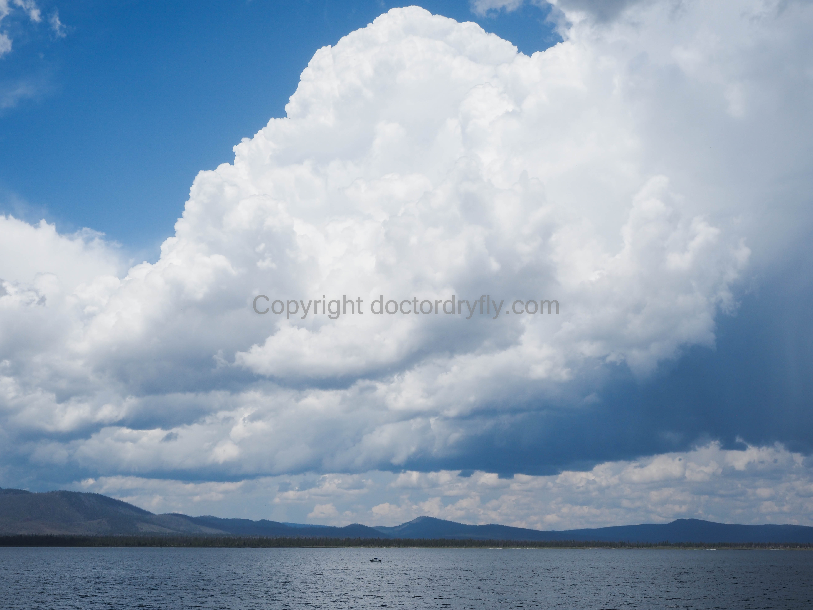 An incoming storm.
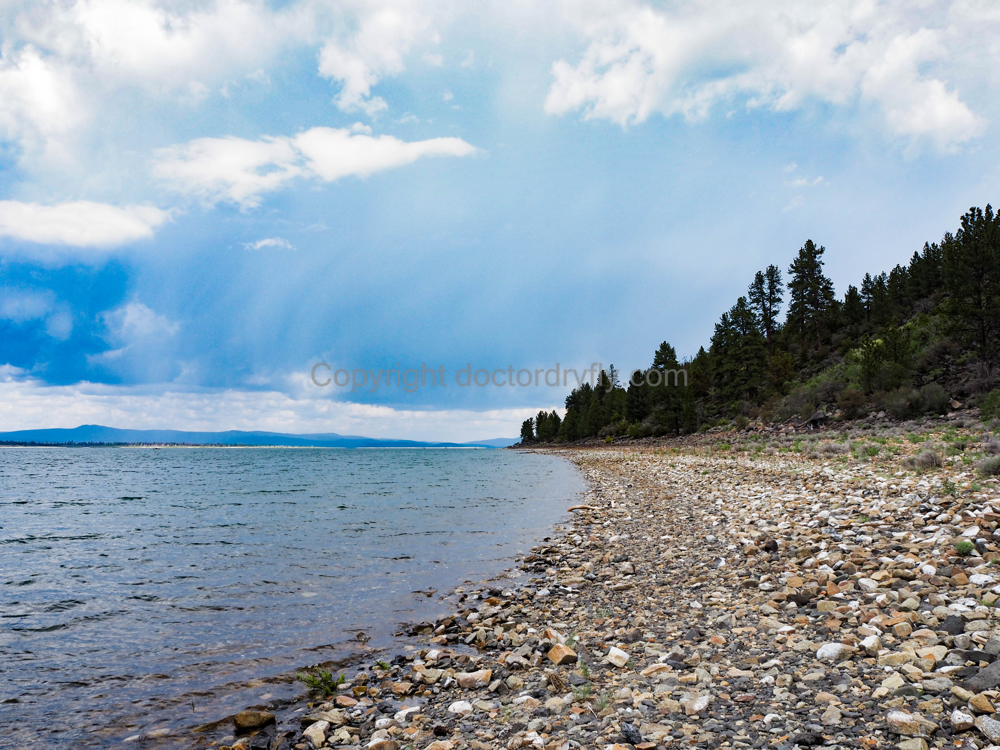 One of the points on the eastern shore where anglers congregated.
I tried the eastern side for most of opening morning, but thunderstorms cut short my fishing. About 10 or 11 a.m. the storms started rolling in, and I took shelter from off-and-on lightning, heavy rain, and hail. I’m no boating expert, but I don’t think it’s smart to stay out on a giant lake in a lightning storm, as I saw a number of people do. Eventually, after fighting the weather for much of the morning and early afternoon, I headed back to camp about 2 p.m. I fished in the same spots in the evening, with no action. The next day I drove around to the Christie area, then up to Pine Creek, which was flowing pretty good. I talked to a guy loading up his car at Christie and he said no one was catching fish there. So much for that.
That evening I drove all the way around the lake from Aspen Glen to the Lassen Youth Camp, which takes about an hour from either direction (i.e., traveling clockwise around the lake, or going counterclockwise, back out to Susanville then north up the lake.) This spot is recommended by Eaglelakefishing.net, the authoritative website on Eagle Lake. Coincidentally, before I left for my trip, I received an email from an accomplished angler asking about my Nevada slam. We exchanged tips and I mentioned I was headed to Eagle Lake. He said that this trout is arguably the most difficult to catch in California if one doesn’t have a boat, but he managed to catch his near the Youth Camp.
To reach the area, take Merrillville Road off 139. Driving clockwise, Google Maps lists a different exit, but that’s clearly not correct. From Merrillville Road, it’s a bit confusing, but there are signs at every junction. Be aware that it is a long drive on dirt roads, but high clearance and/or four-wheel drive is not necessary if the roads are dry. The water off the Youth Camp looks like a very fishy spot. It appears to get deep very quickly, and there are large rocks that provide structure. There were a few other people also fishing there, but there was plenty of space to spread out. I fished for about an hour until another storm blew in and I had to retreat to my car. Also nearby is the Chico State biology station, but a lot of the shoreline near the station was signed as private property, and what wasn’t signed appeared to be a shallow beach area that didn’t look that promising–the Youth Camp is the spot.
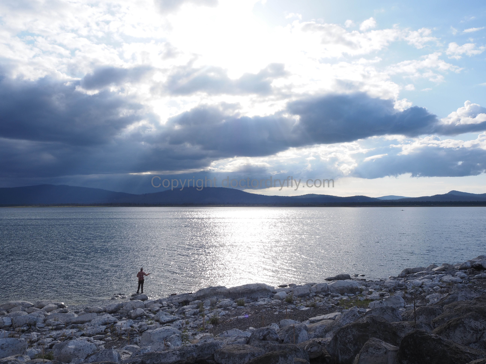 Fishing near the Youth Camp before another storm rolled in.
Despite the good looking water, I had as much success on that side of the lake as I had near Aspen Glen. After two and a half solid days of fishing, I didn’t manage so much as a nibble. Eaglelakefishing.net reported that shore fishing was bad all over the lake on opening weekend. If I go back, I might disperse camp near the Youth Camp and fish exclusively in that area for a day or two.
I considered fishing Pine Creek, Eagle Lake’s main tributary. The creek near the lake is closed to fishing, a change apparently made in the last year or two because the California regulations book from 2021-2022 says Pine Creek is open during the same season as Eagle Lake. The 23-24 book says Pine Creek is open only above Highway 44, which is about 25 miles upstream of Eagle Lake. From what I could find online, there might be a stream resident population of ELRT in the perennial section of Pine Creek near Bogard Campground. The stream is also full of brook trout, however, and I’ve played this game before (see my attempts to catch a Colorado River Cutthroat in Wyoming). Despite my hesitation, later in the summer I stayed at Bogard to fish Pine Creek above Highway 44 (description below).
The problem with fishing Eagle Lake in the heart of Summer is that when the water warms up, the trout head deep, making it nearly impossible to catch them from shore. That means either coming back in the Fall or next Spring, but I’m just not convinced shore fishing is a good strategy. I have also considered hiring a guide with a boat if I get desperate. I don’t love the idea though, both because of the cost and because it feels a little icky. The spirit of the challenge is to solve the problem of catching different fish in different drainages, not hire someone to do it (mostly) for you. Without a boat though, I just don’t think success from shore is very likely.
Coastal Cutthroat Trout–Little Jones Creek
Update, Fall 2023: Sadly, the Little Jones Creek watershed was burned about six weeks after my visit in the Smith River Complex fire.
This was the first fish I targeted on a week-long roadtrip throughout California in July 2023. I drove from the Bay Area, to Del Norte County, east to the McCloud River area, up to Modoc County, then down to the Eagle Lake area, again. The size of California never ceases to amaze me as I covered over 1,500 miles on this trip while successfully catching all five fish I targeted. I can’t say the fishing was great, but that’s not really the point of these challenges. I also fished two different rivers that were not part of the challenge; I’ve put details on those rivers under a separate header here.
Reports online suggest that the Coastal Cutthroat is one of the more challenging fish to catch in the HTC. Descriptions abound of people catching hundreds of coastal rainbows before connecting on a cutthroat. The usual suggestions are Hurdygurdy Creek, Mill Creek, the Smith River, or Patrick Creek. Luckily, I received some good beta before I left about exactly where to fish: Little Jones Creek. From what I can gather, the creek has only native Coastals in it, and there are falls at the confluence of the creek and the Middle Fork of the Smith River that prevent encroachment from Rainbows. In fact, this fish was the easiest of the challenge for me, and may have been my favorite overall experience.
I stayed at Patrick Creek Campground, which is just around the corner from Little Jones Creek road. I arrived on Sunday night and surprisingly, there were only about two sites available. I also checked on Panther Flat and Grassy Flat, which also had only a few open sites. Panther Flat is by far the biggest campground in the area and it looked a bit crowded and noisy, but it was also the farthest away from the highway. Grassy Flat and Patrick Creek are much smaller, but closer to the road. The sites in each looked about the same, nicely spread apart with some privacy, and preferable to Panther Flat. In the end, I chose Patrick Creek because it is right on the Middle Fork of the Smith and is the closest to Little Jones Creek, but there is a significant amount of road noise. It also cost $14 a night, which is medium-high by forest service campground standards, but seriously, who has $14 in cash in this day and age? I ended up paying $20 the first night, then driving down the road to a store, buying ice to make change, and paying exactly $14 dollars the second night. Come on USFS, figure out a cashless payment system.
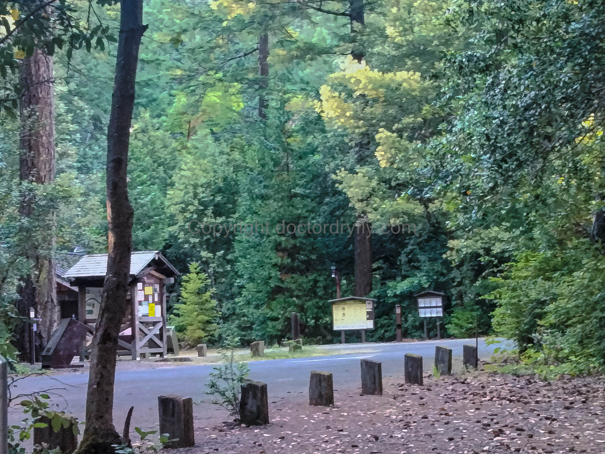 Taken from my campsite. The road is directly behind the trees near the yellow sign.
Driving east from the campgrounds, the road to Little Jones Creek is signed at its intersection with Highway 199. The road is paved until its intersection with the forest road that drops off into the Little Jones basin on the right. From here it’s a good forest service road, though I’ve heard it can become a little dicey when wet. Both the forest service road into the basin and the paved road to the top of the ridge are very steep, but passenger cars should not have an issue.
The drive from the highway to the creek is quick, 20 minutes or so. There is an obvious parking spot on the left, and I initially took the road a little farther into the drainage just to investigate as I usually try to avoid parking and fishing at the first obvious spot. There is private land along the creek and a little farther up the forest road is a driveway that is clearly signed and has a fancy camera pointing at its intersection with the public land. The whole thing looked a little sketchy so the private land should be avoided. After the first point where the road meets the creek, it gains elevation and while it was possible to reach the creek with a steep hike down the road, the private land also extends up the creek a ways making access somewhat limited. In other words, it’s probably not necessary to keep driving once one reaches the point where the parking area is after first entering the drainage.
After going a little farther up the forest service road, I drove back the way I came, parked and started fishing, working my way upstream to the private land (though I was careful not to cross onto the private given the weird signs and camera on the forest road). As is typical for me on this type of creek, I used a dry dropper with a generic size 14 mayfly and size 16 prince nymph. The fishing was easy, and I hammered 10 or 15 fish within an hour, most on the dry. I felt a little guilty about how easy it was given how much difficulty others reported trying to catch a Coastal. The stream is small and I used my Daiwa Keiryu-X 24 tenkara rod, which is eight feet long, just about perfect for streams of this size. The fish were small but spectacularly colored and spotted, looking very different from other cutthroats I’ve caught. And, it’s such a unique experience fishing in the greenery and lushness of the Northern California coastal area. While the fishing wasn’t among the redwoods per se, it was close enough.
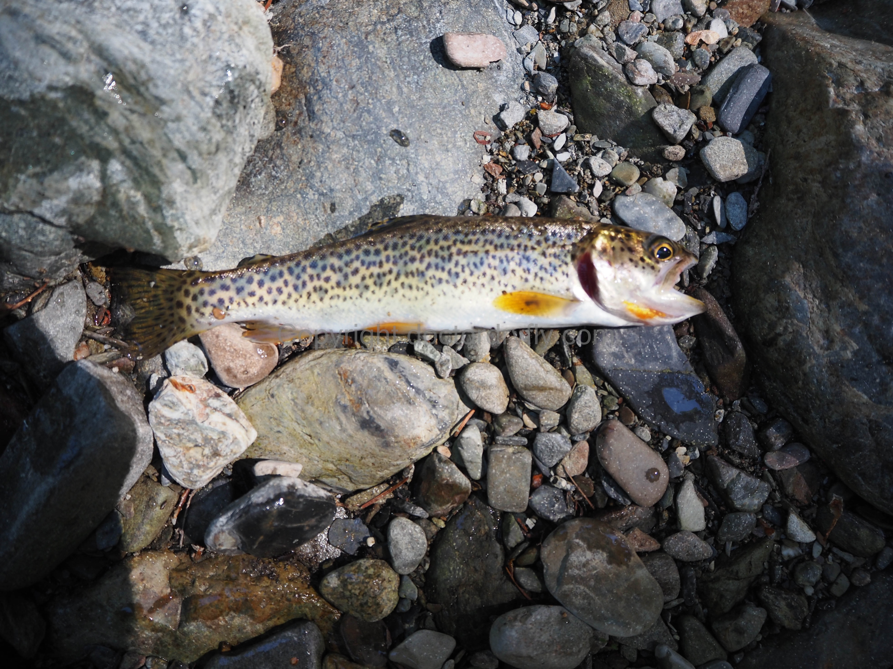 The largest Coastal Cutthroat I caught, but an absolutely striking fish.
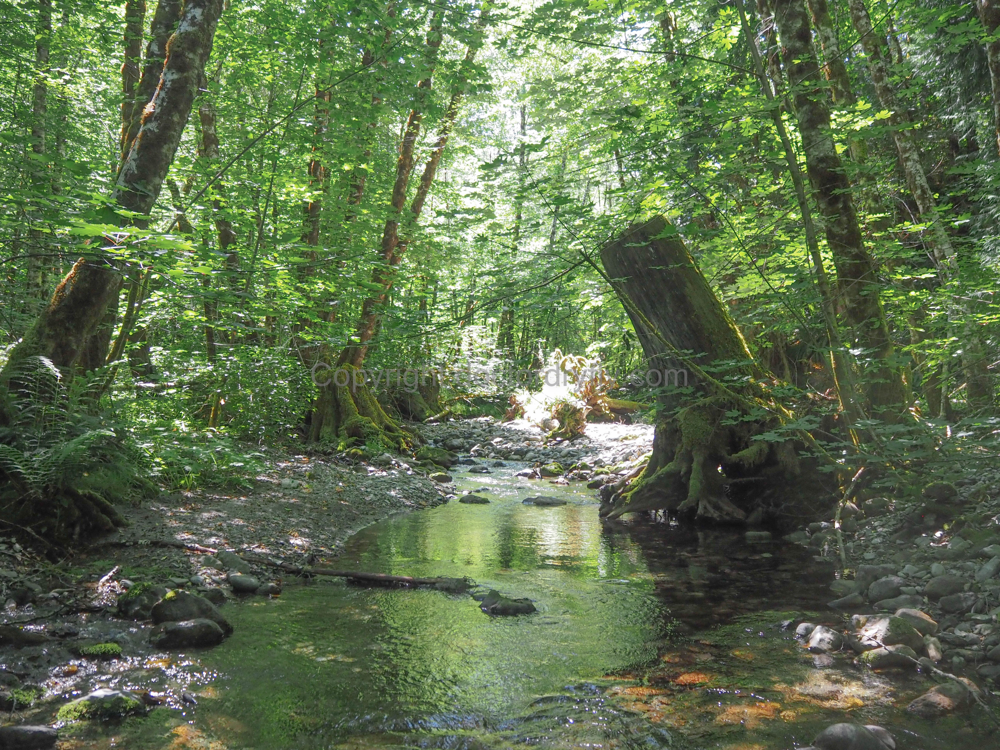 Little Jones Creek.
Coastal Rainbow Trout–Middle Fork Smith River
I was planning on staying at the campground for two nights and with the extra time on my hands, I fished the Middle Fork of the Smith River directly below Patrick Creek Campground. It’s easy to access from the campground either from the sites themselves, where the river is down a steep embankment, or via the parking area slightly east of the camping area. The river looks good in this area; though it’s a little short of structure it’s plenty deep and wide, and the opposite bank had some nice overhangs.
I won’t spend too much time discussing how to catch the Coastal Rainbow as it’s the most common trout in the state, but there are definitely a lot of them in the Middle Fork. The problem is, none were larger than about eight inches. The river certainly seems capable of supporting bigger fish, I just couldn’t find them, even drifting a nymph through deeper looking holes. At the confluence of Patrick Creek and the Middle Fork of the Smith, there is a very deep hole, maybe ten feet or more, that must hold big fish. Still, I don’t like the idea of tying on a giant split shot nymph rig for one hole on a larger river. I didn’t cast into that hole in any meaningful way that allowed me to get deeper than a few feet, but there should be twelve inch fish in other normal sized holes. I just didn’t see any.
 Middle Fork of the Smith River.
Middle Fork of the Smith River.
I wasn’t even going to fish the Smith, assuming I’d get my Rainbow at another spot (and indeed I did, in Deer Creek, where the fish were also small), but in retrospect, I’m glad I did. There was almost no information online about fishing the Middle Fork and maybe this is why. If you’re into catching twenty, six inch Rainbow Trout (meaning twenty different fish, not a few 26 inch fish) go for it. As for me, the fishing in the Middle Fork was decidedly meh, but the scenery and river itself were beautiful.
McCloud Redband Trout–Trout Creek
After spending two nights at Patrick Creek Campground I drove up Highway 199, to the 5, then down to the Mt. Shasta area. I really enjoy the scenery in this part of the state as Mt. Shasta is incredibly prominent from almost any vantage point. It’s such an impressive looking mountain, and I think most people don’t expect this type of scenery in California.
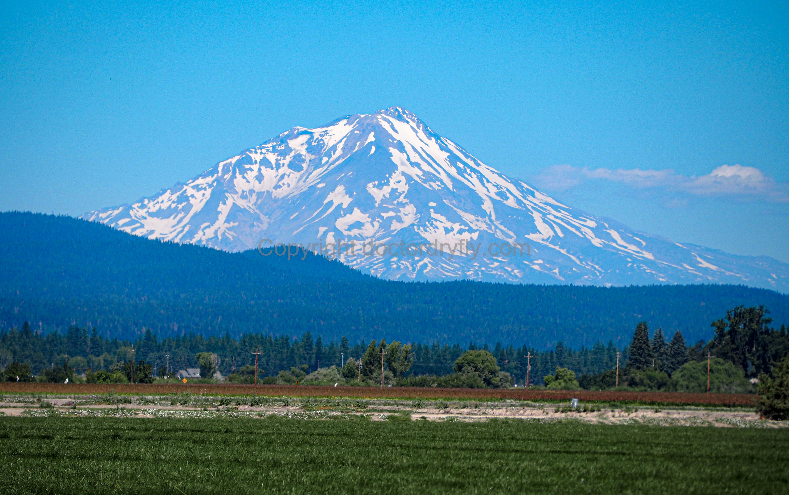 Mt. Shasta, from southeast of the McCloud River basin.
I stayed at Cattle Camp campground for the simple reason that it was about halfway between where I wanted to fish, on Trout Creek, and a planned fishing expedition to the Lower McCloud. (Because the Lower McCloud was not part of my HTC, I describe it under a separate section.) Cattle Camp is a fairly large campground, one of three on the McCloud River loop, a scenic drive off Highway 89. Fowler’s Campground is the largest, and unlike Cattle Camp, it is located directly on the river. However, I had thoughts of fishing the river and Fowler’s has a lot of people swimming and hanging out down by the river. Algoma is farther down the Highway, and off the McCloud River loop, but it appeared to be too far upstream to allow for good fishing in the McCloud. Though Cattle Camp is not located directly on the river, it’s a very short drive to river access. Based on my scouting, it’s surprisingly difficult to find good river access along the McCloud River loop, aside from the dedicated Forest Service spots. In a lot of places it the river is down a very steep embankment, and there aren’t a ton of places to park. I ended up fishing the McCloud at Camp Four Group Campground one evening, and I was the only person around.
Cattle Camp is a perfectly pleasant Forest Service campground, though like Patrick Creek, when I arrived on a Tuesday I was surprised to find almost all sites had been taken. There are two loops, and I found the loop to the left (when driving into the campground) to have nicer spots, though they are closer to the main highway. Unlike Patrick Creek, Cattle Camp is far enough from the highway that traffic noise can be heard rarely, only when a particularly loud car, truck, or motorcycle passes.
Any redband caught in the McCloud above the falls counts for the challenge, but serious anglers know that Trout Creek offers the only real chance to catch the most genetically pure strand of McCloud Redband. That’s where I headed the first evening I arrived, about a 45 minute drive from Cattle Creek campground. Based on my research, I assumed catching the fish would be relatively easy, though in retrospect, given how easy the Coastal was, I was due for regression to the mean.
It was an absolute struggle to catch fish in Trout Creek, so I’m going to provide a detailed description. There are a number of possible ways to reach Trout Creek down forest service roads, and Google will suggest different routes depending on the direction of travel. I think by far the easiest and fastest is to take the Volcanic Scenic Byway to Forest Road 13. The Volcanic Scenic Byway is a small paved road without line markings, but there are logging trucks and other traffic. After turning onto the forest road, it’s a short and easy drive to the campground, which is off the main forest road but clearly marked. The roads are all in good condition and can be easily driven by passenger cars.
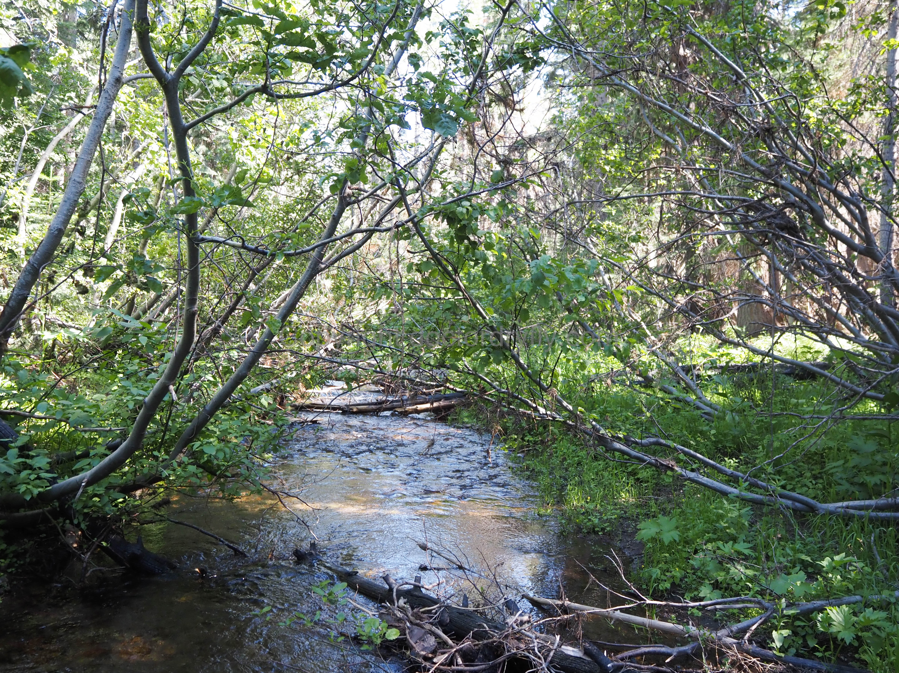 Trout Creek near the campground. This picture undersells how brushy and difficult it was to fish this area.
I saw others complaining online about the condition of Trout Creek campground, but it looked nice enough to me. When entering the campground, follow the dirt road until it crosses the creek. There is no reason to drive across the creek, so park under the pines and start fishing. Given the small size of the creek and the brush, I used my tenkara rod with a dry-dropper again (just like on Little Jones Creek). Sometimes in shallow water with lots of brush I’ll skip the dropper; it makes casting and dapping more difficult and I assume the fish will come up for the fly. This is entirely a feel thing rather than any sort of clear strategy and if whatever I’m doing doesn’t work, I’ll switch.
Near where the road crosses the creek, there is a large obvious hole formed by a stump, and another good looking hole slightly downstream. I didn’t bring anything up in the stump hole, but I did bring up at least one fish in the next hole. I wasn’t able to land it, however. In fact, I brought up five or six fish and couldn’t land any of them! It is extremely brushy in the campground and I had a very hard time making casts and finding fish for three or four hours. It was a lot of bushwacking, bad casts, and swearing. Eventually I worked my way up to a point where the brush diminished and the creek become more of a freestone stream. There were good looking and easily fishable holes in this area, about a half-mile to three-quarters of a mile upstream from the campground. The problem is, I didn’t see any fish in this area and didn’t move a thing. After nearly four hours of this, I gave up and walked down the road that parallels the stream back to my car.
My general philosophy is to listen to others’ advice when fishing, even if I think they don’t know what they’re talking about (which is often). When I returned to my car, I was going to try and fish the same holes I started with near my parking spot in hopes of bringing up the same fish I nearly hooked four hours before. As I was preparing to do so, a motorhome pulled up and asked if I could move my truck so they could camp in the spot. My first thought was to say, find your own spot, you should have gotten here four hours earlier. But I resisted the urge and said, “I’m planning on fishing right here, but I’ll move soon and you can have the spot.” The boomer said, “Can you move now so I can pull in?” I was not thrilled and wished the guy would just give me a few minutes, but I didn’t really have anything to be annoyed about. He then asked me how it was going, I told him, and he suggested I move downstream to where it was less brushy.
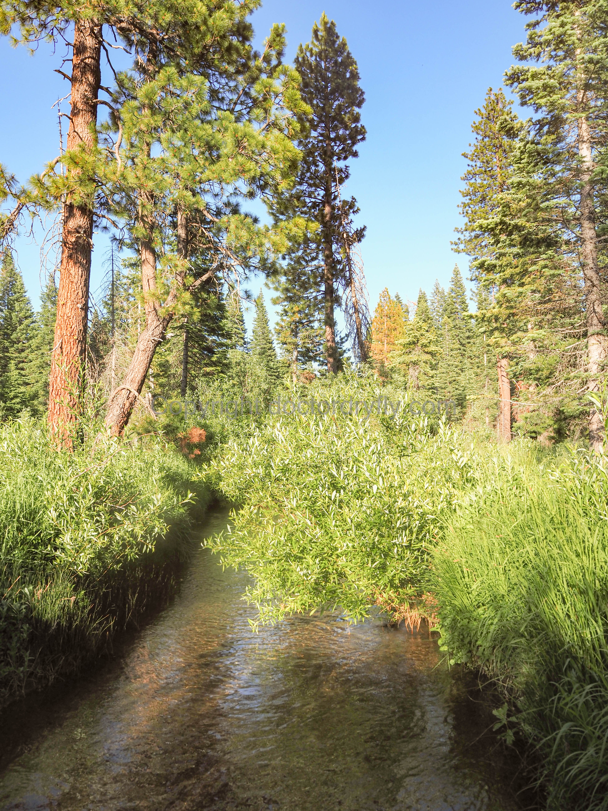 Lower down on Trout Creek where I caught my fish.
To reach the downstream area, do the following. On the road that enter the campground, there is a cattle grate. Immediately before the grate, there is a small road that goes to the left. Turn here and the road will parallel a barbwire fence on the right, with the creek beyond the fence. The road condition is okay; there is one spot that might require high clearance, but four-wheel drive is definitely not necessary. Maybe half a mile down the road, there is an obvious turnout and a gate on the right that allows access to the land behind the fence. Walk through the gate, follow the small dirt track to the creek and fish upstream or downstream from this point. The creek environment is totally different here, more of a meandering meadow creek with overhanging willows and a sandy bottom, rather than the mud and choking brush in the campground. There are not a lot of fish in this area, but there are clear holes with fish in them. As I went upstream, I saw a fish feeding and cast to it, but got no response before it spooked. I went back downstream and worked that direction. At about seven p.m., I saw a fish rising downstream of me and made a float toward it. After nearly five hours of fishing, I had my McCloud Redband. I wouldn’t want to have to do that again, but if I did I would immediately start in the downstream meadow section rather than at the campground.
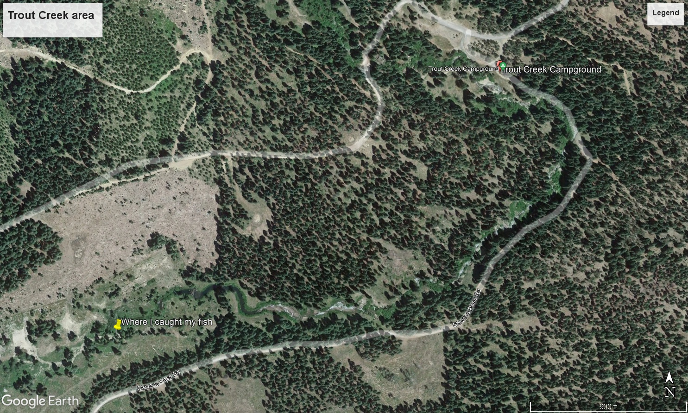 Google Earth image of where I caught my fish relative to Trout Creek Campground.
My efforts to fish in the upper McCloud, along the loop road, were short but similarly fruitless. I saw one fish feeding, made a crappy cast, and it disappeared. I didn’t bring up anything else in about an hour of fishing. The McCloud is surprisingly small until it gets closer to the falls, but it’s crowded in that area with people swimming so I didn’t do any fishing down there. I’m also glad I didn’t plan on catching my rainbow here because I didn’t see any of those either. Good scenery, not great fishing.
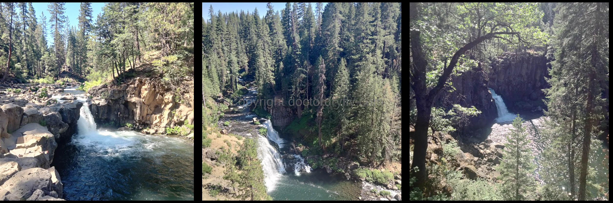 Lower, Middle, and Upper McCloud Falls.
Warner Lakes Redband Trout–Dismal Creek
From the McCloud area I drove south through the Fall River Valley. In this area, both Lassen and Shasta are visible to the south and northwest respectively, which is a unique perspective on both given their prominence above the surrounding landscape. The drive is easy and otherwise unremarkable. My plan was to fish for the Warner Lakes Redband first, catch it, then return to Lassen Creek Campground and spend the night. If I wasn’t able to catch the Warner Lakes Reband and had to try again in the morning, I could easily stay at Cave Lake Campground near the Dismal Creek basin.
The forest road from Highway 395 up to Cave Lake is in good condition but the grade is very steep. The habitat looks more similar to Utah or Nevada than say, the Sierra, which makes sense given the mountains form the western edge of the Great Basin. In 2023, the forest was still exceptionally green and there were still snow patches on the higher peaks, consistent with language in the HTC booklet. In fact, the HTC book warns that, “…snow may be present well into July. Well-shaded forests along the access roads can often leave deep pockets of snow that impede road access. In addition, road conditions are mainly unimproved and high-clearance vehicles are recommended.” I found both warnings a little hyperbolic. I arrived on July 13th in a very heavy snow year and the forest roads to Dismal Creek basin were completely dry. As I mentioned, the road to Cave Lake was good, and the road above Cave Lake to the Dismal Creek basin road turnoff was also in fairly good share, if a little hair-raising as it hugs some cliffs above the lake. From the turnoff into the Dismal Creek basin the road is probably fine for cars with a little bit of clearance as there are just a few rocky sections and some small dry rivulets running down the road. The turnoff to Dismal Creek is signed, making it impossible to miss.
The drive into the basin crosses a low pass and drops slightly into a large meadow with some cliff bands above and to the right. The creek begins in these meadows and gathers water as it flows downstream, nearly due north into Oregon. The area is very striking and was probably my favorite scenery of the entire trip. It helps that there was no one else up there except one dirt biker who went past on the road.
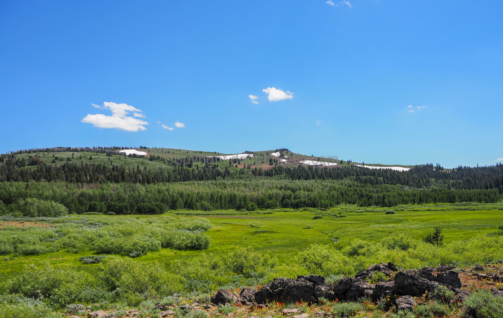 The meadow where Dismal Creek begins.
Once the road emerges from the pines and enters the meadow, it crosses the creek then continues semi-parallel to it for another mile or so. Immediately before the creek crossing, there is a big obvious turnoff near some rocks. I parked here and made my way down to the creek, deciding to work upstream before I fished an obvious hole on the downstream side of the road culvert. The creek is small, only a foot or two wide, but it is somewhat deep and looked like it could hold trout. I am always suspicious of the obvious hole on the side of the road, so I usually like to work upstream before returning, thinking that if things go wrong, I’ll still have the obvious spot to fall back on. Access on Dismal Creek is a non-issue and though the willows are thick in spots approaching the creek, there wasn’t much overhang which made casting easy with my Tenkara.
I again used a dry-dropper, and I thought the dropper would especially useful given the significant depth (knee deep in parts) relative to width. I floated my flies very close to some undercut banks, and through some deeper holes. Five minutes went by without action, then ten, then fifteen. I don’t actually expect to catch a fish in ten or fifteen minutes, but something should happen: a rise, a take, a nibble, a fish spooking. I didn’t see a thing. I’ll sometimes walk through water or stomp on the bank just to move a fish, and I did that on Dismal Creek after about 20 minutes of nothing.
I walked back to the obvious hole on the side of the road. I gave myself a little space downstream, then worked up to it, again having no problems making good casts or getting my flies where I wanted them. I got to the deep hole immediately downstream of the culvert and cast my flies in a few times. Absolutely no movement. At this point, I’d fish for about a half hour and hadn’t seen a thing. I became convinced there weren’t fish in this part of the creek. Time to change plans.
I had Twelvemile Creek as a backup, but it looked much farther down the road and I didn’t want to drive that far down the forest road unless I absolutely had to. Dismal Creek flows through the first meadow, then appears to drop steeply down into a second flat-ish, meadow-like area. I decided to drive another half-mile or so down the road where it looked like access to the lower meadow was easier. onX suggests that a number of smaller springs and side channels contribute water to Dismal Creek in the second, lower meadow, so I was hoping that bigger water would hold fish. Driving down the road, there is a rock-covered knob to the left, then a small canyon to the right of the knob. I parked there and worked my way down the canyon and knob, which proved to be a little tricky because of significant blow-down in the pines on the knob, and thick willows in the canyon. Still, reaching Dismal Creek in the lower meadow wasn’t all that far of a hike, about 20 minutes down, though one loses significant elevation so it’s a longer hike back up. Google Earth shows a very large pond in almost exactly the spot where I fished. That pond is no longer there, but the creek is somewhat bigger than in the upper meadow and there was at least one small beaver pond (though nothing like the size of the one shown on Google Earth). As I walked up to the creek, I immediately saw a spooked fish swim upstream. Found them, finally!
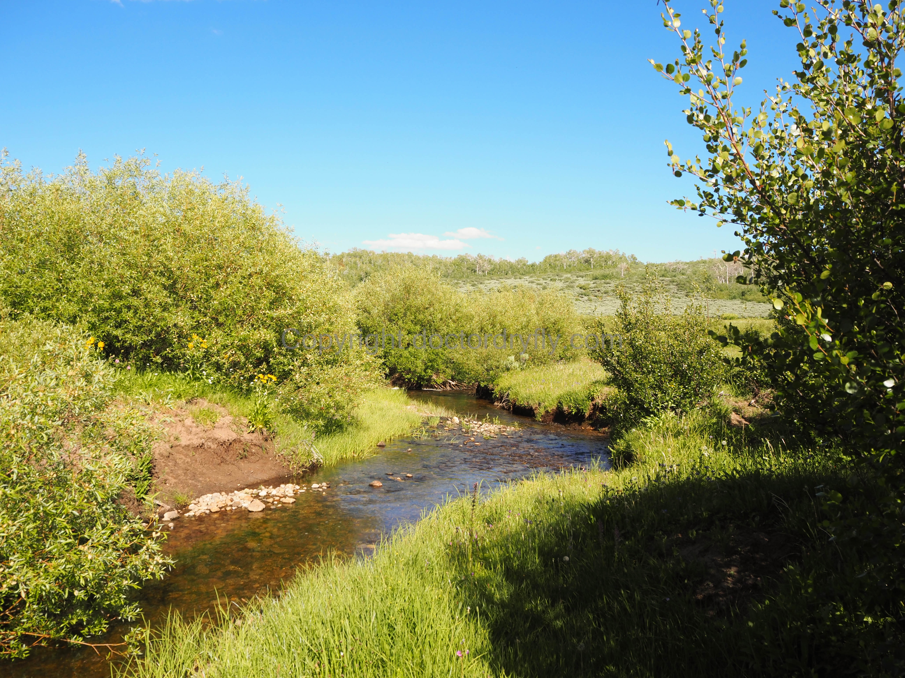 Lower down, Dismal Creek looked fishy.
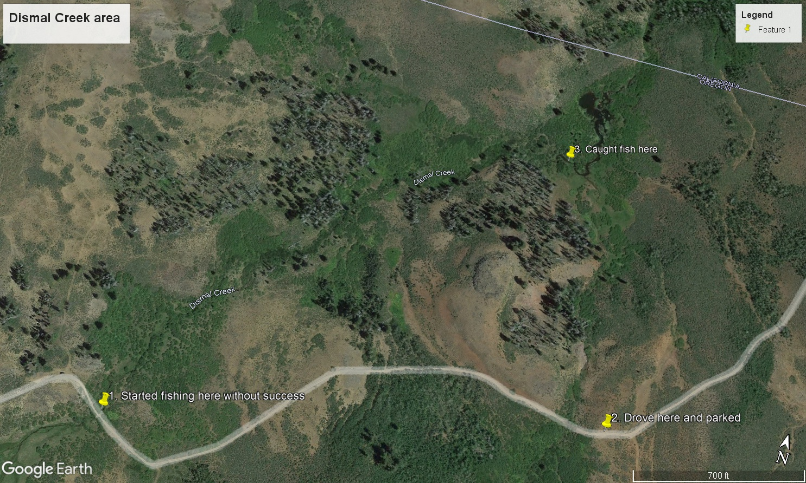 Google Earth image of where I caught my fish in the Dismal Creek drainage.
 The fish I caught was rising at the front of this hole under the branches.
The fish I caught was rising at the front of this hole under the branches.
I walked downstream on the banks, then found a break in the willows and started working my way upstream in the creek, casting as I went. There were good looking holes in this area, and I quickly found that some of them held fish, though I would expect greater fish density given the look of the water. I brought up a few fish on my dry, but was unable to hook any of them. Still, at this point it felt like catching one was only a matter of time. Of course, I had thought that at Trout Creek too. My first and only Warner Lake Redband brought to the net took about two hours total, including fishing in the upper meadow for maybe 30 minutes, driving to the second spot, hiking 20 minutes down into the lower meadow, then fishing for another 30 to 40 minutes. I probably could have caught more Warner Lakes had I wanted to, but I still needed to drive over to Lassen Creek, set up camp there and maybe even fish that evening.
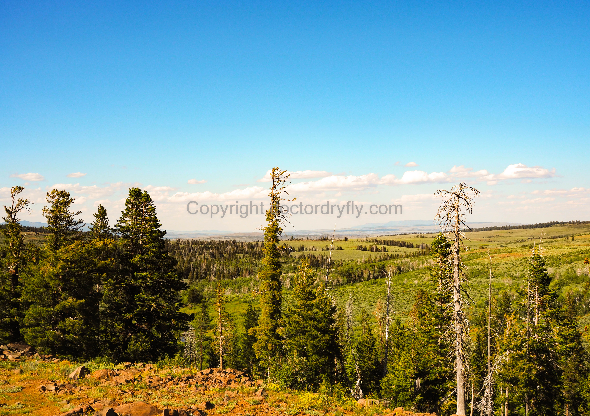 Looking down the Dismal Creek drainage into Oregon. This was my favorite spot on the entire trip.
Goose Lake Redband Trout–Lassen Creek
Lassen Creek Campground is free, and that’s the best thing I have to say about it. Reviews online suggest it’s very nice, but I was extremely disappointed. First, because I showed up late in the afternoon, around 5 p.m., there were only two sites available. One was set apart from the other sites, but didn’t have much shade and was right next to the bathrooms. The other site was on the creek, but was sandwiched between two other sites with virtually no privacy. As I was putting my tent up, the dog from one of the sites ran over to me and started jumping up on myself and the tent–not cool at all. Luckily, the people in the site very close to me stayed inside their trailer the entire time I was there. The campground is only seven sites–two are isolated and looked nice, but had large groups of people in them. One is isolated right next to the bathroom, and the other four are nearly on top of each other. It’s also stuck between two forest service roads that had trucks driving up and down them frequently, including large logging trucks. Road noise wasn’t as bad as at Patrick Creek, but for being in the middle of nowhere there was a decent amount of activity.
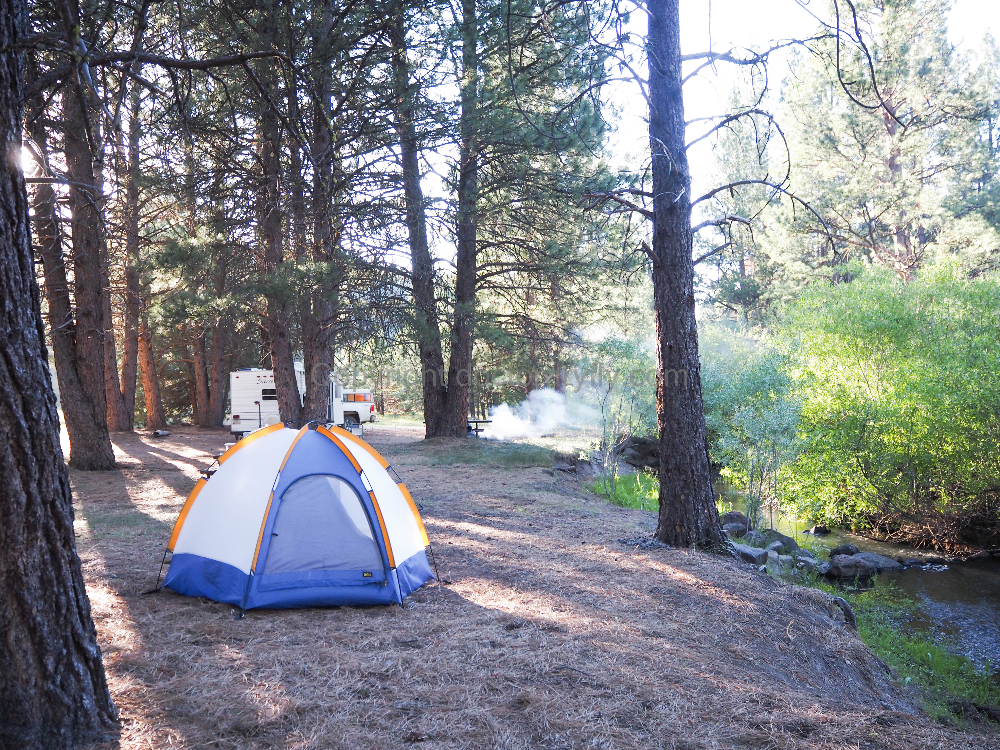 My tent and my neighbor’s trailer at Lassen Creek. Not a lot of space or privacy between sites.
And there were cows, the nemesis of small creek anglers. When I arrived, I noticed the creek was somewhat off-color, and it took me about an hour to figure out why. Cows were above, below, and in the campground. My camping spot had a large pie right in the middle of it. When I fished the next morning, a group of ranchers drove 30 cows or so up the road immediately to my right and into meadows above the campground. Were I to do this again, I would reverse the order of my fishing, stopping at Lassen Creek first, then driving to Cave Lake and camping there, fishing Dismal Creek the next morning. It also looked possible to disperse camp near the Dismal Creek basin, making that an attractive option. The drive between Cave Lake and Dismal Creek isn’t far, but it’s just enough of a pain to make it worthwhile to camp in the basin itself.
At Lassen Creek, there were fishy looking holes right at my campsite. Even though I told myself I wanted to wait until the morning for an official go at finishing my slam, I couldn’t resist and threw my dry-dropper into the holes while holding a beer. I brought fish up immediately though I didn’t successfully hook any; completing the slam would have to wait until morning. When I woke up, I walked downstream to where the road crosses a bridge on its way to the campground and started fishing. Lassen Creek has moderate brush, but there are enough clear spots to make some good casts. I started catching fish almost immediately and brought five or six to the net within an hour. Officially, my slam was complete.
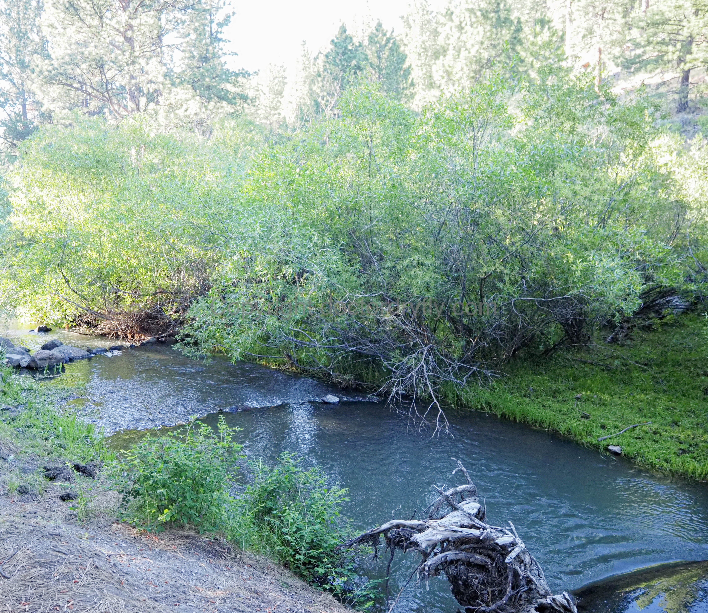 The creek right behind my campsite. These holes held fish but the water was hazy because of the cows upstream.
Eagle Lake Rainbow Trout–Attempt Number 2, Pine Creek near Bogard Campground
I had budgeted approximately eight nights and I’d only used five to finish my HTC. I had a few ideas about what to do next. Fishing Hat Creek near Burney intrigued me as it’s touted as one of the best fly-fishing destinations in the state and was only about two hours away. I also thought about driving to Reno and fishing the Truckee for a whitefish, which would put me one fish closer to finishing the Nevada slam. I’d struck out earlier in the summer on Eagle Lake so I had the idea of fishing Pine Creek above Highway 44, near Bogard Campground. As discussed above, I had no idea if there were even Eagle Lake Rainbows in the creek, but I thought the worst that could happen is I catch a bunch of Brook Trout. A significant heatwave was setting in and the high temperature the next day in Reno was forecast to be 106. Even if I was standing in the Truckee, that sounded miserable. Hat Creek would always be there and I was a little wary about trying to fight the crowds on a Friday and Saturday. And, even though I had officially finished my HTC, my goal was always to catch all the possible fish in California, not just six. Exploring Pine Creek might get me one fish closer, solve the problem of how to catch the Eagle Lake Rainbow trout without fishing the lake, and answer a question about the fish in the creek. The allure of catching a seventh Heritage Trout was too much, so on to Bogard Campground I went.
When I left Lassen Creek about 10 a.m., it was already roasting. When I arrived at Bogard Campground three hours later, it was downright suffocating. The campground is nice enough with sites set among pine trees and somewhat spaced out. As with every other campground I visited, there were only two or three sites available out of ten total. I spent my first three hours there seeking shade and trying to wait out the heat. It is far enough away from the highway that there was no road noise, but there is an active train track that parallels the main road and the conductors really seemed to lay on their horns. I’m a deep sleeper and I was woken up in the middle of the night by a freight train horn.
About 5 p.m. I decided to give it a go. Near camping site three(?) there is a sign pointing to the water pump. From there, the creek is straight ahead through tall grass, brush, and swamp. I was surprised how large it was and how many good looking holes there were, so I expected to catch a bunch of brook trout, at least. There were three problems with fishing Pine Creek near the campground. First, reaching it from the campground is not that easy. The brush and grass is quite thick and it’s hard to see where you’re stepping and where you’re going. Second, once at the creek, there are a tremendous number of logjams that block upstream and downstream access, though there seemed to be fewer of them moving downstream. The logjams can be navigated by going around them, but that involves some serious bushwhacking. They are really a pain and block a substantial amount of creek access. The campground and creek are on the edge of the 2021 Dixie Fire burn scar and while the campground appears to be largely unscathed, there are a significant number of downed trees to the north, closer to the creek area. The amount of water required to move those logs and dirt is hard to imagine.
The third problem I faced fishing Pine Creek is that there weren’t any fish. I have no idea where they were. My research seemed to imply that both Pine Creek and nearby Bogard Creek were infested with Brook trout and possibly some Eagle Lake Rainbows, but it’s obvious there was nothing in the creek near the campground. I moved upstream some distance, through a higher gradient section, then into the upper meadow above the campground. The creek was definitely big enough to hold fish, and had some nice looking holes, but it was entirely empty. I have no idea and I’d love to know what’s going on with Pine Creek in that area. I assume the fish are up higher, but I can’t imagine the area around the campground is not good enough habitat. If anyone else is thinking about trying to fish for the Eagle Lake Rainbow near Bogard, my advice is don’t do it. I have no pictures from Bogard either; it was hot, and I was tired and frustrated.
Summary
I was able to catch five fish in six nights, but as with the Wyoming slam, I felt this was a little too quick to move through the challenge. On the other hand, all of the creeks, with the exception of the Middle Fork of the Smith River, are very small and don’t offer classically great fly fishing unless you’re really excited by four inch fish. In that sense, the HTC is more like the Utah Cutthroat Slam in that the water and fish are both on the small side. None of the spots were places I wanted to spend two or three nights fishing nonstop. In fact, after my second night fishing the Smith and feeling less than satisfied I had terrifying thoughts: was this all becoming rote? Would I better off going to someplace in Montana and hammering 18 inch fish on the regular? Do those places even exist? Why am I wandering so far afield from the Logan River when that’s just about the best fishing I’ve ever experienced?
I think these thoughts mostly disappeared as the trip continued, but let’s just say I haven’t totally dismissed them. Fishing for, and catching the Coastal Cutthroat and Warner Lakes were enjoyable experiences. I also have not caught any of the Kern Rainbows and I’m hoping the Kern River offers better overall fishing. As an aside, I don’t know what to say about the Eagle Lake Rainbow Trout. I hate fishing lakes, but I’ll probably catch it someday?
In terms of difficulty, six fish is definitely harder than the four required in Utah and Wyoming, but the fishing, on the whole, was somewhat easy. The McCloud River Redband from Trout Creek was by far the most difficult for me, but I was able to catch every fish within a few hours. The scenery and campgrounds were nice enough, and I particularly enjoyed the Shasta/McCloud area, even if the fishing wasn’t great. The challenge also allowed me to see parts of the state I would never otherwise end up in (Modoc County, for example). In fact, the Dismal Creek area was very much a pleasant surprise and I wish I’d spent the night up there.
The challenge also brings anglers close to other prime fishing spots. I fished thelower McCloud at the Nature Conservancy (I was unimpressed), Deer Creek outside of Chico, and had plans to fish Hat Creek, which is sort of on the way between Modoc County and Bogard Campground. I skipped it because of the impeding heat and by the time I was heading to Bogard I was ready to escape to the coast. Summer weather in California must be a consideration nowadays as none of the locations are at particularly high elevation (other than Dismal Creek), and the McCloud area especially was hot. I mentioned previously that the driving distances were substantial, even from the Bay Area, though it’s an entire half of the state with no traffic! Given those considerations, I would rank the HTC as more difficult than both Utah and Wyoming, but less difficult than Nevada (of course). In terms of enjoyment, I don’t think the scenery, isolation, and overall fishing quality can compete with Wyoming, but I think I preferred it to Utah. The driving was rough, but the variation in landscapes and habitats make up for it. Of course, all of this is subjective and will depend on which trout and locations each individual angler chooses to target.